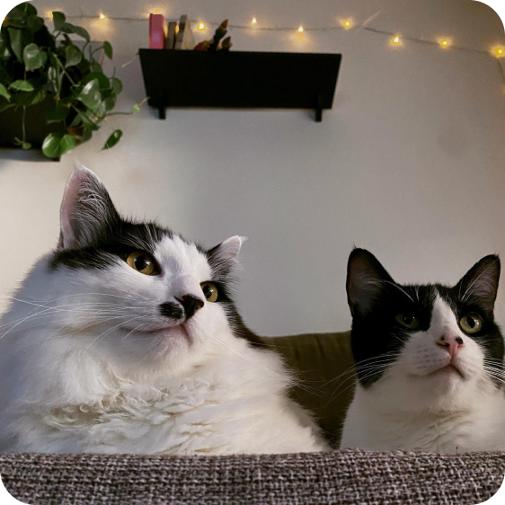

Sobre mim
Nascido no litoral de São Paulo, caiçara, vegetariano 🥦, pai de pet 🐱 e torcedor do esporte em que 22 pessoas correm atrás de uma bola 🌴⚽
Trabalhando no mundo da tecnologia busco entender as relações entre pessoas, somada a relação entre pessoa-tecnologia, seja no desenvolvimento de sistemas, na relação interpessoal do dia a dia ou na experiência do usuário.
O convivio e interação nesse meio, influênciou na construção da minha trajetória e com certeza isso acompanha quem sou hoje!

Voltar para:
- Início
- Sobre a minha carreira
-
Por que criei esse site? [Em construção]
-
Um blog [Em construção]